Conservation Laws
Created Dienstag 08 März 2016
This chapter gives an overview of the general forms of the conservation equations.
1. General Integral Form in 3D
Consider a 3 dimensional control volume 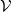. The figure below shows a generic cell centred (e.g. centre of mass) at the spatial point with coordinates 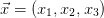. The closed 2 dimensional outer surface of  shall be orientable and is denoted by
shall be orientable and is denoted by  . We use the convention, that the positive orientation of the according surface normals ( 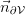 etc.) is inward
. We use the convention, that the positive orientation of the according surface normals ( 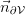 etc.) is inward  .
.
In general it should hold for a conserved quantity 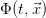 integrated over that the change in time of this integral is equal to the sum of the integrated sources  in and all currents 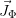 of
in and all currents 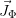 of  crossing the surface .
crossing the surface .
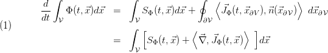
From the first to the second line we have used Gauss' Theorem in order to rewrite the surface integral as a volume integral.
Some Notation
We have applied some mathematical notation here and in the following which we shall briefly explain.
The scalar product between a row and a column vector can be written as
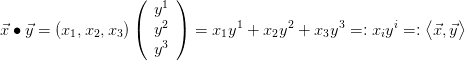
Sometimes we use index notation for vectors. Lower indices indicate components of row vectors, upper indices indicate components of column vectors
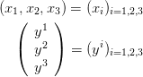
In the maths literature column vectors are sometimes simply called 'vectors' and row vectors are called 'co-vectors'.
On the second to last term on the right hand side of the scalar product we have introduced Einstein's sum convention, which assumes that we sum over identical indices appearing in upper and lower position in the same term. By 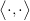 we introduce an alternative notation scalar product between vectors in three dimensional Euclidean space, coming from differential geometry.
Moreover we introduce the derivative vector  . Sometimes we will also abbreviate
. Sometimes we will also abbreviate
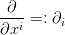 and 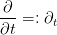
Hence 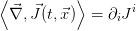 denotes the divergence scalar field of the vector field 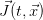 . On the other hand 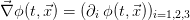 denotes the gradient (co-) vector field of the scalar field 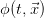.
2 Differential Form in 3D
2.1 Control Volume Constant in Time and Spatially Fixed
Assume that is constant (with respect to time) and fixed (with respect to its position and spatial extension).
If  is constant, after integration over the left hand is a function of 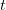 only, hence we can move the time derivative into the integral:
is constant, after integration over the left hand is a function of 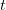 only, hence we can move the time derivative into the integral:
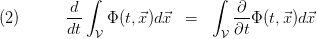
Since (1) and (2) shall hold for arbitrary  the terms inside the integrals must be equal, that is
the terms inside the integrals must be equal, that is
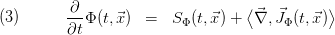
For the purpose of the ClaRa library, the currents  will be caused by 2 effects: convection and diffusion/conduction.
will be caused by 2 effects: convection and diffusion/conduction.
As  is a volume-specific quantity, we can rewrite it as 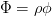, where
is a volume-specific quantity, we can rewrite it as 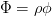, where  is the medium density and 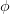 is a mass-specific quantity.
is the medium density and 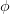 is a mass-specific quantity.
Then we can express convective currents as
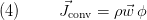
where 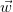 denotes the flow velocity of the medium relative to and 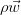 denotes the mass flow density of the medium.
In the same way we can express diffusive or conductive currents as
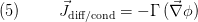
where 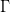 denotes a diffusion / conductivity constant (in general it could be a tensor) and by assumption the current direction is opposite to the gradient of  .
.
With these ingredients the general differential equation describing a conserved quantity 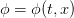 (e.g. internal energy, momentum, mass) can be written as
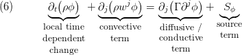
which can be compared to [1].
2.2 Temporally + Spatially Variable Control Volume
Assume the points 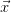 inside the control volume move along the integral curves of a velocity vector field  , that is
, that is
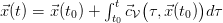. Then 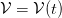 is time dependent and (2) becomes
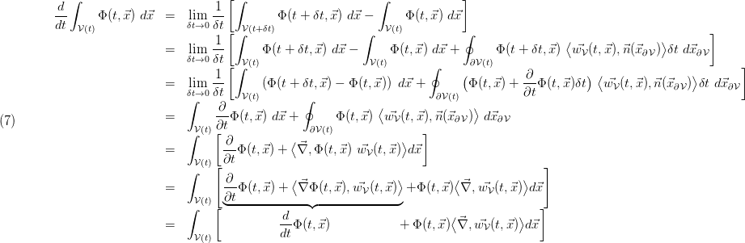
Here we have carried out the following steps
- Line 1: express total time derivative as differential quotient
- Line 1 → 2 : express the difference 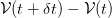 within
 as a thin shell with the outer surface area 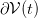of 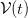 and
as a thin shell with the outer surface area 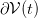of 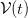 and
- Line 2 → 3: re-sort terms with the same integration range and express
- Line 3 → 4: neglect terms of 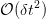 in the right term and use the definition of the partial time derivative in the left term
- Line 4 → 5: use Gauss' theorem
- Line 5 → 6: evaluate Leibnitz' rule for 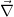 acting on the product 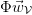.
- Line 6 → 7: use definition of the total time derivative 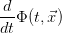. In the CFD literature this is also called substantial derivative or material derivative and is denoted by 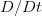.
Now one can re-do all steps from section 2.1 . One simply has to keep in mind that the velocity (flow-) field 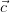of the medium gives the relative velocity of the medium with respect to , that is 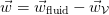.
In the special case 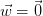, the expansion vector field 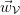 is identical to the velocity (flow-) field of the medium as seen from a rest frame. Then can be interpreted as a fluid volume moving along the stream lines of the floating medium.
In this case the convective current term (4) is obviously zero. The convective term re-enters the equations through the divergence term on the right hand side of (7), if we transform from a moving control volume to a constant, spatially fixed control volume by using the continuity equation (8).
3 Particular Conservation Laws
3.1 Mass Conservation
If we set 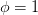 in (6) we obtain the continuity / mass conservation equation:
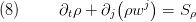
Here 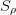 denotes mass flow sinks and / or mass flow sources inside .
3.1.1 Compressible vs. Incompressible Medium Model
In general we can assume that the density follows an equation of state [4]:
,
where  is the pressure and
is the pressure and  denotes the temperature. Hence we can expand about a reference state
denotes the temperature. Hence we can expand about a reference state
Moreover we can express the mass conservation (8) in terms of the states and as follows:
That is we can express the partial derivative as
Often (12) is used in order to define the time derivative of pressure from the mass balance.
Incompressible Flow
If no mass source is present then the mass conservation (8) reads:
 , which describes the total time derivative of density following a particle along a flow line in space and time is assumed to vanish
, which describes the total time derivative of density following a particle along a flow line in space and time is assumed to vanish  .
. As a consequence, the divergence of the velocity vanishes. which states that the volume of a fluid particle following the flow stays constant with time.
Re-stated from the control volume point of view:
In incompressible flow there is no mass storage within a control volume, due to a change of pressure.
Incompressible Media
If the medium is incompressible then  in (10) is set to zero: The density is assumed to depend on the temperature only but not on the pressure .
in (10) is set to zero: The density is assumed to depend on the temperature only but not on the pressure .
We have a simplified equation of state:
As a consequence the mass balance (11) simplifies to
and (12) simplifies to
From this it follows for the specific heat capacities [4] of an incompressible medium
 (specific heat at constant pressure)
(specific heat at constant pressure)
Here denotes the specific inner energy and the specific enthalpy.
An incompressible medium implies incompressible flow, while incompressible flow does not necessarily imply an incompressible medium!
In an incompressible medium density can still vary with time, but only due to changes in temperature.
Incompressible Medium incompressible Flow and Mass Conservation
In case of incompressible flow, pressure is not a state any more.
Re-stated from a control volume point of view:
In incompressible flow density only depends on temperature:
→ pressure is not a state any more
→ mass storage can only happen due to temperature changes within the control volume (and/or mass flow sinks or mass flow sources):
→ mass flows at a given control volume are algebraically coupled.
3.2 Energy Conservation
If we set in (6) where is the specific internal energy, we obtain the energy conservation equation:
Here denotes heat flow sinks / sources inside and denotes the thermal conductivity of the fluid.
3.3 Momentum Conservation
If we set in (6) where is a specific velocity component, we obtain the momentum conservation equation:

Here denotes the dynamic viscosity of the fluid and denotes external forces such as gravity ( is the gravitational acceleration vector) as well as due to pressure differences ( is the pressure gradient) or friction.
References
[1] S.V. Patankar, "Numerical Heat Transfer and Fluid Flow", Hemisphere Publishing Corporation, 1980.
[2] H.K. Versteeg and W. Malalasekera, "An introduction to computational fluid dynamics, The finite volume method", Longman Scientific & Technical, 1995.
[3] W. W. Baumann, U. Bunge, O. Frederich, M. Schatz, F. Thiele, "Finite–Volumen–Methode in der Numerischen Thermofluiddynamik", lecture notes, Technical University Berlin, Germany, 5th edition, 2006, in German.
Version History
30.04.2014 - v0.1 - initial implementation - Johannes Brunnemann, XRG Simulation
03.02.2017 - v1.2.0 - some additions / corrections - Johannes Brunnemann, XRG Simulation
Backlinks: ClaRa:Basic Concepts of Modelling:Finite Volume Approach